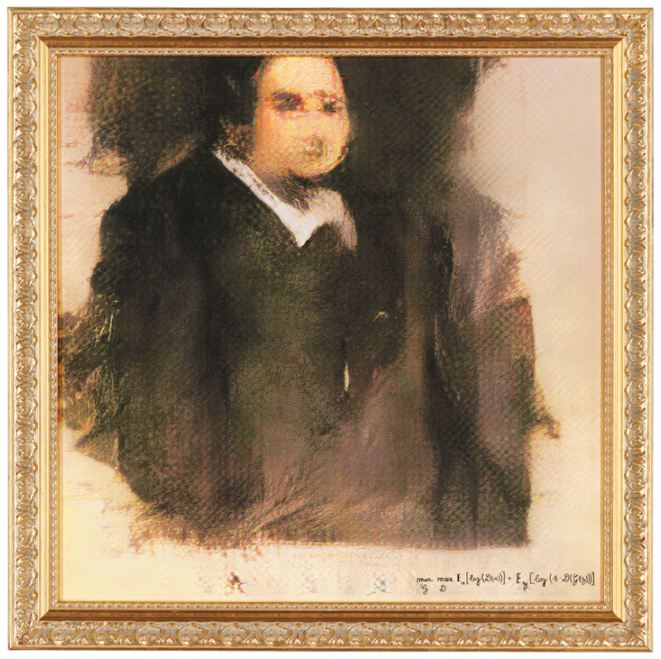

LES BEAUX-ARTS IA DE QUÉBEC.IA (version préliminaire)
Redéfinition de l’histoire de l’art | Lancement d’envergure dans les grandes capitales
Québec, Montréal, Vancouver, Saint-Martin, Beverly Hills, Panama, Brésil, Paris, Milan, Principauté de Monaco, Genève, Belgique, Allemagne, Luxembourg, Espagne, Autriche, Londres, Fédération de Russie, Aspen, Maui, SoHo, Israël , La Jolla, Macao, Dubaï, Inde, Qatar, Arabie Saoudite, Beijing, Shanghai, Hong Kong, Tokyo et Tapei.
Naissance des Beaux-Arts IA — Québec.IA présente un nouveau mouvement artistique.
 — Signé: Montreal.IA")
“Les artistes qui créeront avec l’IA ne suivront pas les tendances, ils les détermineront.“ — Les Beaux-Arts de Québec.IA
Un mélange d’art, de culture et de science dans l’esprit de Léonard de Vinci.
Ouvrant la porte à un nouveau mouvement artistique au 21 ème siècle, les Beaux-Arts de Québec.IA suscite déjà un émoi parmi les plus grands collectionneurs d’art ainsi que parmi les personnalités les plus brillantes, les plus influentes et les plus iconoclastes du monde.
À la Renaissance, le pape Jules II a commandité le peintre Michel-Ange, afin que celui-ci réalise le plafond de la chapelle Sixtine au Vatican. Aujourd’hui, vous pouvez commander, de la même façon, une œuvre d’art IA à la Maison des Beaux-Arts de Québec.IA.
Captivant un public averti, les Beaux-Arts de Québec.IA reflète une diversité esthétique, une richesse conceptuelle et le respect de la créativité la plus pure, exprimée par une machine et considérée comme la plus élevée dans la hiérarchie des genres. Nous préparons une campagne de relations publiques dans le monde entier avec la participation à des émissions télévisées et avec la confection d’un documentaire spécialisé.
Un nouveau jour est arrivé dans monde artistique
Le 25 octobre 2018, l’histoire du marché de l’art de l’IA a été chamboulée. La première œuvre d’art en intelligence artificielle a été vendue aux enchères de Christie’s et a bouleversé les attentes en atteignant 432 500 dollars.

Références
- The first AI artwork to be sold in a major auction achieves $432,500 after a bidding battle on the phones and via ChristiesLive — Christie’s
- A sign of things to come? AI-produced artwork sells for $433K, smashing expectations — Allyssia Alleyne, CNN
- Eerie AI-generated portrait fetches $432,500 at auction — Devin Coldewey, TechCrunch
“Un porte-parole de Christie’s nous a parlé de l’excitation du marché face à ce changement important: “Nous pouvons confirmer qu’il y avait cinq soumissionnaires différents de toutes les régions du monde qui étaient en concurrence pour le lot à ce prix élevé, ce qui semble être un bon indice de l’intérêt des collectionneurs et du potentiel de marché futur pour l’art de l’intelligence artificielle en général…”“ — Adam Heardman, MutualArt
La Maison des Beaux-Arts de Québec.IA
Histoire des Beaux-arts de l’IA: la construction d’un héritage
La Maison des Beaux-Arts de Québec.IA est en avance sur une tendance qui aura un impact profond sur l’industrie internationale de la mode, des beaux-arts et de la joaillerie, qui est un marché d’une valeur de 350 milliards de dollars par an ( 🌐 http://www.billionaire.tv/TheGazette.pdf ).
Un renouveau des grands idéaux de la Renaissance. | Les agents d’intelligence artificielle de la Maison des Beaux-Arts de Québec.IA se bonifient par leurs enseignements acquis grâce à leurs expériences pour concevoir des œuvres d’art et une vision surhumaines! Nos créations sont des purs objets de désir évoquant les contes de fées et les rêves enchantés et traduisent un sentiment d’exclusivité: une poésie fascinante, originale et vibrante de l’IA.

Exaltant l’apprentissage en profondeur, l’apprentissage par renforcement, les réseaux antagonistes génératifs, le méta-apprentissage et l’auto-apprentissage à une échelle véritablement mondiale et pour déployer avec passion et avec une inhabituelle élégance une nouvelle approche, la Maison des Beaux-Arts de Québec. IA propose des créations surhumaines et des designs révolutionnaires générés par l’IA, qui sont uniques en leur genre, dévoilant un monde majestueux de secrets cachés:
❖ Le parfum de l’IA (parfums)
Une ligne aussi enchanteresse que les muses qu’elle inspire.
❖ Haute-Joaillerie IA Multi-Mondes ( 💎 )
Une collection qui est sur le point de redéfinir l’industrie du diamant du XXIème siècle.
La Maison des Beaux-Arts de Québec.IA est pionnière dans les nouvelles coupes de diamants et atteint un sommet sans précédent en matière de brillance, de scintillement et de dispersion pour les fashionistas qui définiront les tendances de la haute-joaillerie de notre époque.
❖ Oeuvres d’art (signées: Québec.IA)
Des oeuvres originales numérotées et signées, certificat d’authenticité compris.

Une odyssée au coeur univers parallèles cosmologiques, divins et mythologiques rendue possible par l’IA.
Une histoire légendaire: la source d’un héritage exceptionnel
Le secrétariat général du Conseil exécutif des Beaux-Arts de Québec.IA
Catalyseur professionnel et expérimenté dans les domaines de la recherche innovante, de l’ingénierie financière et du luxe international, le président-fondateur de Québec.IA, Vincent Boucher, a reçu le 15 octobre 2009, le prestigieux certificat Record du monde Guinness pour sa Tourmaline Paraiba taillée la plus importante au monde.

Un travail d’innovation intellectuelle, esthétique et technique | La clairvoyance stratégique de Vincent Boucher et sa capacité à mener l’un des projets les plus ambitieux de l’Histoire lui ont permis de se positionner à la fine pointe de son domaine et de se forger une réputation bien méritée à l’échelle mondiale.

“L’homme d’affaires (Vincent Boucher) acquiert la pierre la plus rare au monde.”“ — Mike King, The Gazette

Magnifiant les créations les plus pures et les plus belles, en proposant un enseignement et des recherches révélant des aspects uniques d’un point de vue critique, intellectuel et historique et en ouvrant les portes à un nouveau mouvement artistique, la Maison des Beaux-Arts de Québec.IA alimente la passion qui anime les artistes de l’IA les plus performants du moment.
Définir le genre des Beaux-Arts en IA
Un sentiment de mystère… et une compréhension profonde du monde, des gens et de la nature humaine.

“Pour identifier les œuvres véritablement novatrices, nous ferions mieux de cesser de nous questionner à savoir où se situe la frontière entre le travail de l’artiste et l’utilisation des outils de l’IA, et de plutôt commencer à nous demander si des artistes humains utilisent l’IA pour approfondir leurs concepts et leur esthétisme plus que les chercheurs ou codeurs.“ — Tim Schneider et Naomi Rea, artnet, 25 septembre 2018
Apprentissage en profondeur + Apprentissage par renforcement + Réseaux antagonistes génératifs + Méta-apprentissage + Auto-apprentissage
Références
- Data Science, Machine Learning and Artificial Intelligence for Art — Vishal Kumar
- Scaling the Mission: The Met Collection API (406,000 images of over 205,000 CC0 objects) — Loic Tallon, Chief Digital Officer
- What do 50 million drawings look like? — Google
- Neural scene rendering: Transfer learning to render a fruit still life from photos — Brett Göhre
- GAN Lab: Play with Generative Adversarial Networks (GANs) in your browser! Web | Paper — Minsuk Kahng, Nikhil Thorat, Polo Chau, Fernanda Viégas, and Martin Wattenberg
- Generating Memoji from Photos — Pat Niemeyer
- Playing a game of GANstruction — Helena Sarin
- Large Scale GAN Training for High Fidelity Natural Image Synthesis Paper | TF Hub | Colab — Andrew Brock, Jeff Donahue, Karen Simonyan
- TL-GAN: transparent latent-space GAN — SummitKwan
- TensorFlow-GAN (TFGAN) — Joel Shor, Sergio Guadarrama
- Progressive GANs | Notebook with smooth interpolations through z-space — Gene Kogan
- Self-Attention GAN Paper | Tensorflow implementation — Han Zhang, Ian Goodfellow, Dimitris Metaxas, Augustus Odena
- Discriminator Rejection Sampling — Samaneh Azadi, Catherine Olsson, Trevor Darrell, Ian Goodfellow, Augustus Odena
- Tensorpack | Generative Adversarial Networks — Tensorpack
- Ngx | Neural network based visual generator and mixer — Keijiro Takahashi
- Magenta Studio (beta) — Google AI
- Differentiable Monte Carlo Ray Tracing through Edge Sampling — Tzu-Mao Li, Miika Aittala, Frédo Durand, Jaakko Lehtinen
- A Few Unusual Autoencoders — Colin Raffel
- Deep Variational Reinforcement Learning for POMDPs — Maximilian Igl, Luisa Zintgraf, Tuan Anh Le, Frank Wood, Shimon Whiteson
- Learning Dexterity — OpenAI
- Robots that Learn — OpenAI
- (Self-Play) | OpenAI Five — OpenAI
- TFHub state-of-the-art AutoAugment Modules — TensorFlow
- Creatability: a new collection of experiments exploring ways to make creative tools more accessible — Experiments with Google
- Evolved Virtual Creatures, Evolution Simulation, 1994 — Karl Sims
- Reinforcement Learning for Improving Agent Design: What happens when we let an agent learn a better body design together with learning its task? Article | Paper — David Ha
“La technologie de création artistique de notre époque sera l’IA.“ — Rama Allen
#AI4Artists : Révélons un monde de secrets cachés
Confectionner des création légendaires: un cours de 75 minutes bien conçu pour les artistes

Vers qui vous tourneriez-vous si vous souhaitiez apprendre le meilleur de l’IA pour les artistes?
Le Secrétariat général de QUÉBEC.IA présente, en toute légitimité par ses connaissance aiguisées, toutes les facettes de l’IA pour les artistes: “#AI4Artists: premier survol mondial de l’IA pour les artistes“.
PUISSANT ET UTILE. Ce cours pratique est conçu pour offrir à tous l’état d’esprit, les compétences et les outils nécessaires pour percevoir l’intelligence artificielle d’un nouveau point de vue stimulant:
— Des découvertes et des connaissances scientifiques de pointe;
— Les meilleurs codes et implémentations “open source”;
— L’impulsion qui anime l’intelligence artificielle d’aujourd’hui.
Conçu pour les artistes, #AI4Artists est créé pour inspirer les artistes qui, avec IA, façonneront le 21ème siècle.
Une célébration vraiment spéciale qui marquera l’histoire!
Pour André Breton, le père du surréalisme, le but de l’art est l’unification du réel et de l’imaginaire. Les Beaux-Arts de Québec.IA réalise le rêve de Breton. Une célébration vraiment spéciale dans le monde des beaux-arts, de la mode et de la haute-joaillerie et qui fera certainement l’histoire!
Nous recherchons des ambassadeurs et des partenaires.
✉️ Courriel : info@quebec.ai
📞 Téléphone : +1.514.829.8269
🌐 Site web : http://www.quebec.ai/
📝 LinkedIn : https://www.linkedin.com/in/montrealai/
🏛 Secrétariat Général de Québec.IA : 350, RUE PRINCE-ARTHUR OUEST, SUITE #2105, MONTRÉAL [QC], CANADA, H2X 3R4 *Conseil exécutif et bureau administratif
#IntelligenceArtificielle #IntelligenceArtificielleQuebec #QuebecIA